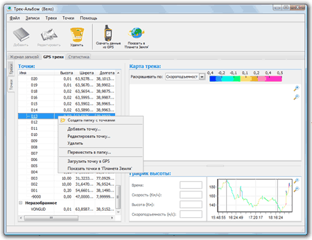
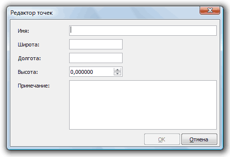
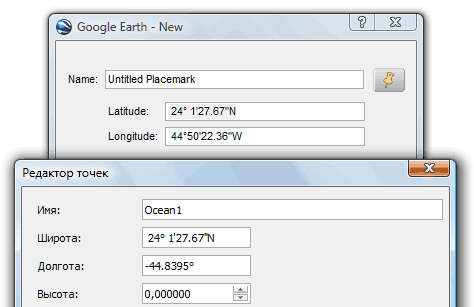

Справка / Работа с точками
Работа с точками происходит на вкладке GPS треки, подвкладка Точки:

Список точек
В списке нем показываются список папок с точками.
Точки, скачанные с GPS, по умолчанью попадают в папку 'Неразобранное'.
Что-бы добавить точки в проект нужно либо скачать их с GPS либо импортировать из файла.
Для работы с точкой кликните по ней левой кнопкой мыши, иногда может понадобится выбрать 2 и более точек, удерживайте кнопку Ctrl или Shift для этого.
Для вызова контекстного меню кликните правой кнопкой мыши.
Импорт точек
Для импорта точки:
- Выберите меню Файл/Импортировать точки
- Выберите файл точек
- Нажмите кнопку 'ОК'
Создание и редактирование точек
Для создания точки:
- Выберите нужную папку, в которую Вы хотите поместить новую точку
- Вызовите контекстное меню правой кнопкой мыши, выберите пункт 'Добавить точку'
- В открывшемся окне редактирования заполните имя точки, широту, долготу
 - Нажмите кнопку 'ОК' для сохранения точки
Для редактирования точки сделайте двойной щелчок левой кнопки мыши или выберите пункт меню 'Редактировать точку' в контекстном меню точки.
Создавать точку удобно с помощью 'Планета Земля'.
Для этого:
- Выберите место на 'Планета Земля' где Вы хотите поставить точку
- Добавьте точку через меню Add/Placemark
- Откроется окно со свойствами точки в 'Планета Земля', скопируйте координаты точки в форму добавления точки Трек-Альбома
 - Нажмите кнопку 'ОК' для сохранения точки
Просмотр точек в 'Планета Земля'
Выберите нужные точки и нажмите кнопку 'Показать в 'Планета Земля'' на тулбаре.
Если вы выберите папку с точками, то будут показаны все точки этой папки.